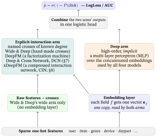
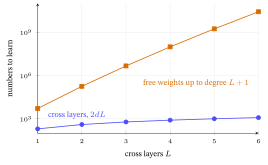

15 Click-Through Rate Prediction & Feature Interactions
Most of the book so far ranked items by comparing a user vector with an item vector — a dot product, one number per pair. That is the retrieval half of a real system. The ranking half asks a sharper, different question: given this exact (user, item, context), what is the probability of a click? That number — the click-through rate (CTR) — is the industrial workhorse: in the industry papers’ own accounts it orders the feed, picks which ad to show, and is the final ranking stage on top of retrieval. Every statement in this chapter about what industry does or earns (usually flagged by words such as “in practice”, “is said”, “report” or “industry”) is a claim from practice: the chapter works the arithmetic but does not test the claim.
CTR prediction looks easy (it is just “predict a 0/1”) and is secretly hard, for one main reason: a large share of the signal lives in feature interactions (§9 prints one measured gap, on one benchmark). “The film is a horror film” is weakly predictive; “it is Friday evening” is weakly predictive; “a horror film on a Friday evening” is strongly predictive — and a plain linear model cannot see it. This chapter builds the models that learn those interactions automatically, from a logistic-regression baseline up through Google’s Wide & Deep, then DeepFM (a factorization machine joined to a deep network) and the Deep & Cross Network (DCN): the lineage that the industry papers report running in production.
What this chapter assumes. The dot product (the Linear-Algebra primer), the sigmoid (Probability & Statistics for Machine Learning §3), log loss (Loss Functions & Regularizers §2.2; the logistic-regression model itself is built in §3 below), embeddings (Traditional Recommender Systems §5), and the multi-layer perceptron together with its ReLU (rectified linear unit) activation (Neural Networks & Back-propagation §2–§3). Only §7 also leans on the skip-connection (Representation Learning & the Transformer), the outer product \(\mathbf u\mathbf v^{\top}\) and the truncated singular value decomposition (both in the Linear-Algebra primer). Only §8 leans on multi-head self-attention and the softmax (Representation Learning & the Transformer §4, with the softmax in Probability & Statistics for Machine Learning §3); each is glossed in a clause where it appears.
What it builds on. The factorization machine (Traditional Recommender Systems §8), the bridge from matrix factorization to feature-rich models, and the ranker in the retrieval-then-ranking funnel of Training and Serving a Recommender. The two scores this chapter is graded on are LogLoss (binary cross-entropy: how good the predicted probabilities themselves are), owned by Loss Functions & Regularizers §2.2, and AUC (area under the curve: how well clicks are ranked above non-clicks), owned by Evaluation Metrics §8; this chapter only puts a worked number on them. It is the first chapter of the Frontiers part: a bounded tour of where the field goes next, at calibrated depth.
1. The click-through rate (CTR) task: a click as a label
Ann’s mobile screen has room for five films, and the app must decide which five to show her tonight. A film she would love but ignores right now wastes a slot, so for each film the app needs a number: how likely is she to tap it, this evening, on mobile? This section turns that question into the quantity the whole chapter predicts.
Retrieval models a user and an item as vectors and scores the pair by a dot product — good for fishing a few hundred plausible items out of millions, fast. But the dot product is blind to context (the time of day, the device, the slot on the page) and treats every user–item pair through one low-dimensional lens. The ranking stage re-scores that short list with a much richer model and a different target: \[ \widehat{\text{CTR}} \;=\; P(\text{click}=1 \mid \text{user},\ \text{item},\ \text{context}). \]
Read the line piece by piece. The hat means our model’s estimate of the quantity under it; \(P(\cdot)\) is a probability, a number between \(0\) and \(1\); \(\text{click}=1\) names the event that a click happens; and the bar \(\mid\) means given that we already know what follows it. So the whole display says: the probability that this impression is clicked, given the user, the item and the context — a conditional probability (Probability & Statistics for Machine Learning §1, which writes the same thing \(\Pr(\cdot)\)).
The label is implicit and binary. Every time the system shows one item to one user in one slot it writes down — logs — an impression: one row recording who saw what, where and when. One impression is (Ann, Titanic, evening, mobile); she tapped it, so its label is \(1\). One that was shown-but-not-clicked is a \(0\).
Averaged over many impressions, the fraction that get clicked — clicks \(\div\) impressions, e.g. \(3\) clicks in \(100\) impressions \(=0.03\) — is the click-through rate, literally the rate at which shown items are clicked through. A CTR model predicts that fraction for one specific (user, item, context): the probability \(\widehat{\text{CTR}}\) above. Even small gains in it are said to be worth a great deal in ad and feed revenue, which is why this corner of recommendation has its own dense literature and its own benchmarks (the Criteo and Avazu logs, two public collections of ad impressions with click labels, of the Datasets & Benchmarks appendix).
Where it sits. CTR prediction is the ranker in the two-stage retrieval → ranking funnel built in Training and Serving a Recommender: retrieval (a dot product over the whole catalog) proposes a few hundred candidates; the CTR model, free to be slow and feature-rich, re-orders them, and the top \(K\) of that order is what the page shows. Retrieval answers “which items are even worth considering?”; ranking answers “of those, which will this user click right now?” (In search and in writing about large language models this same second stage is usually called reranking — a different name for the same job.)
In one line: an impression is one showing, labelled \(1\) if clicked and \(0\) if not, and the click-through rate is clicks \(\div\) impressions: \(3\) clicks in \(100\) impressions is \(0.03\), the number the ranking stage predicts for one user, one film and one moment.
2. The data: sparse features, and why interactions matter
Suppose the logs show (the counts below are invented for the arithmetic) that on a desktop a sci-fi film is clicked no more often than any other film, and among other films mobile is clicked no more often than desktop. Yet a sci-fi film shown on mobile is clicked four times as often as anything else, as if the two habits only count together. This section shows why a model that adds habits up cannot see that, and what one extra feature fixes.
A CTR training row is not two embeddings — it is a long list of categorical fields, each one-hot encoded (a vector of zeros with a single \(1\) marking the active category). The table below shows the fields of one impression, a different one from §1’s: Ann, Matrix (which this chapter’s logs tag sci-fi, one of the two genre tags Traditional Recommender Systems §2 gives it), on mobile, in the evening.
| Field | Example value | Encoding |
|---|---|---|
| user_id | Ann |
one-hot over millions of users |
| item_id | Matrix |
one-hot over millions of items |
| genre | sci-fi |
one-hot over ~20 genres |
| device | mobile |
one-hot over a few devices |
| daypart | evening |
one-hot over a few buckets |
The table lists categorical fields only, as in the toy logs of this chapter. A real log such as Criteo’s also has numeric columns (13 in Criteo); a CTR model either buckets each number into ranges and one-hot encodes the bucket, so it becomes one more categorical field, or feeds it to the network as a plain number beside the embeddings.
Concatenated — placed end to end, so in a toy catalog of just three genres and two devices a one-hot \([0,1,0]\) for genre and a one-hot \([1,0]\) for device become the single vector \([0,1,0,1,0]\) — the real ones are far longer, around \(20\) slots for genre and millions for the user and item identifiers. A single row is a vector with millions of dimensions and a handful of ones: extremely sparse (mostly zero) and extremely high-dimensional. Two consequences shape every model in this chapter:
- A linear model underfits. Logistic regression on these features learns one weight per category — “sci-fi has weight \(+0.2\)”, meaning it adds \(0.2\) to the log-odds of a click (§3 defines that scale) — and then just adds them. It can never represent “sci-fi is predictive on mobile”, because that is a property of a combination of categories, not of any one. A large share of the predictive signal is in the feature interactions (also called feature crosses).
- You cannot cross them by hand. With \(m\) categories there are \(\binom{m}{2}=m(m-1)/2\) possible pairwise crosses — read \(\binom{m}{2}\) as “\(m\) choose 2”, the number of ways to pick \(2\) of the \(m\) (for \(m=4\) that is \(4\cdot3/2=6\) pairs). With \(m=2\) million categories, \(m(m-1)/2\approx 2\times10^{12}\): at most trillions of crosses, an upper bound, since two categories of one field are never active together. Few of those pairs ever appear in a log: an impression with \(5\) active categories shows \(\binom52=10\) pairs, so a log of \(10^9\) impressions (a size assumed here) holds at most \(10\times10^9=10^{10}\) pair occurrences, at most \(0.5\%\) of the \(2\times10^{12}\) pairs, so at least \(99.5\%\) of the possible pairs never appear.
A feature interaction is a conjunction — logical AND, written \(\wedge\): true only when both parts are true — such as genre=sci-fi ∧ device=mobile. Hand-engineering the few useful ones (the original “wide” arm of Wide & Deep, §5) is exactly the manual labor the deep-CTR lineage was invented to remove. The entire chapter is one question: how do you learn which feature interactions matter, automatically?
Worked example — why adding weights cannot be enough. Take four groups of \(1{,}000\) logged impressions (invented counts, chosen for the arithmetic), split by genre (sci-fi or not) and device (mobile or not), and count the clicks:
| genre | device | impressions | clicks | click rate |
|---|---|---|---|---|
| sci-fi | mobile | 1,000 | 200 | 0.20 |
| sci-fi | desktop | 1,000 | 50 | 0.05 |
| other | mobile | 1,000 | 50 | 0.05 |
| other | desktop | 1,000 | 50 | 0.05 |
Sci-fi on a desktop does nothing (\(0.05\), same as the plain baseline), and mobile on other films does nothing (\(0.05\)) — but sci-fi and mobile together quadruple the click rate. (Pooled over both of its rows, sci-fi reads \(0.125\), and so does mobile, but only because of that one group.) An additive model gives each category one weight and adds the active ones: \(\text{rate}=b+w_{\text{sci}}\,[\text{sci-fi}]+w_{\text{mob}}\,[\text{mobile}]\), where \([\cdot]\) is \(1\) when that category is active and \(0\) otherwise. Fit it to the last three rows and every weight is forced: the last row gives \(b=0.05\); the second row gives \(b+w_{\text{sci}}=0.05\), so \(w_{\text{sci}}=0\); the third gives \(w_{\text{mob}}=0\) the same way. Its prediction for the first row is therefore \(b+w_{\text{sci}}+w_{\text{mob}}=0.05\) — four times too small.
Could other weights do better? Over all four rows, a little. The least-squares weights \(b=0.0125\) and \(w_{\text{sci}}=w_{\text{mob}}=0.075\) spread the miss across the rows: total squared error \(0.0056\) against \(0.0225\) for the weights above, a prediction of \(0.1625\) on the first row. But now no row is right: every row is off by \(0.0375\). No choice of the three weights fits all four rows, because any additive model forces \[ \text{rate}_{\text{sci,mob}}-\text{rate}_{\text{sci,desk}}-\text{rate}_{\text{oth,mob}}+\text{rate}_{\text{oth,desk}}=0, \] while the data says \(0.20-0.05-0.05+0.05=\mathbf{0.15}\neq 0\). That leftover \(0.15\) is the interaction, and it has nowhere to live.
Now add one cross feature, \([\text{sci-fi}]\times[\text{mobile}]\). Its value on the four rows is the product of the two indicators: \(1\cdot1=1\), \(1\cdot0=0\), \(0\cdot1=0\), \(0\cdot0=0\) — it fires on the first row only. Give it the weight \(w_{\times}=0.15\) and all four rows fit exactly: \(0.05+0+0+0.15=0.20\) on the first row and \(0.05\) on the other three. One extra number, and the model can finally say something the parts could not.
Why “cross”. A crossed feature (or cross-product feature) is literally the product of two one-hot indicators, as in the four products just computed: it equals \(1\) only when both categories are active, i.e. on their intersection. “Cross” = the conjunction; learning a weight for it = learning that the combination, specifically, predicts clicks. (Exercise E6 repeats the argument on a new table and on §3’s log-odds scale rather than on the rate itself, which keeps every prediction inside \(0\) and \(1\).)
In one line: in four groups of \(1{,}000\) impressions an additive model predicts \(0.05\) on the sci-fi-on-mobile group where the truth is \(0.20\); the gap \(0.15\) is the interaction, and one cross feature with weight \(0.15\) closes it.
3. The baseline and the scoreboard: logistic regression, LogLoss, AUC (area under the curve)
A model gives each of four logged impressions (two of them Ann’s) a click probability. Is the model any good? Two things can go wrong: the probabilities can be off, and the order of the impressions can be wrong, and a single number rarely catches both. This section builds the simplest such model and the two scores that grade those two failures.
The simplest CTR model is logistic regression (LR): score the row with a linear function, then squash the score to a probability with the sigmoid: \[ \hat p \;=\; \sigma(z), \qquad z = w_0 + \sum_j w_j x_j, \qquad \sigma(z)=\frac{1}{1+e^{-z}}. \]
Decoding each piece: \(\mathbf x\) is the (mostly-zero) one-hot feature vector of §2, and \(x_j\in\{0,1\}\) is its \(j\)-th entry — one number, \(1\) if category \(j\) is active in this row and \(0\) otherwise. (\(j\) counts categories here, as in Traditional Recommender Systems §8; the book keeps \(i\) for an item.) \(w_j\) is the learned weight for category \(j\), so only the active categories contribute to the sum; and \(w_0\) is a bias.
The function \(\sigma\) — the sigmoid (“S-shaped”), built in Probability & Statistics for Machine Learning §3 and re-used throughout Loss Functions & Regularizers — maps any real number to \((0,1)\) so it reads as a probability. This sigmoid on top of the score, the logistic head, is what every model below ends with; the models differ only in what they feed into \(z\).
The score \(z\) has a name worth knowing: it is the log-odds (or logit) of the click, \(z=\ln\frac{\hat p}{1-\hat p}\), and the sigmoid is exactly its inverse (Probability & Statistics for Machine Learning §3). So every active category adds a fixed amount of log-odds — which is §2’s “just adds them” on the log-odds scale instead of the rate scale, and is why a cross feature is needed before a combination can carry its own effect. In numbers: \(\hat p=0.8\) gives \(z=\ln 4=1.386\), \(\hat p=0.2\) gives \(-1.386\) and \(\hat p=0.5\) gives \(0\). §2’s rates \(0.20,\,0.05,\,0.05,\,0.05\) are the log-odds \(-1.386,\,-2.944,\,-2.944,\,-2.944\); an additive log-odds score fitted to the last three rows predicts \(-2.944\) for the first, and the \(1.558\) it leaves unexplained is the interaction again (Exercise E6 fits this properly on a new table).
How CTR is scored. Two metrics dominate — LogLoss, the binary cross-entropy built from zero in Loss Functions & Regularizers §2.2, and AUC, owned by Evaluation Metrics §8. Here we put a CTR number on each.
LogLoss — how good the probabilities themselves are: \[ \text{LogLoss} = -\frac{1}{N}\sum_{n=1}^{N}\Big[\,y_n\ln \hat p_n + (1-y_n)\ln(1-\hat p_n)\,\Big]. \] Here \(N\) is the number of impressions and \(n\) indexes them; \(y_n\in\{0,1\}\) is impression \(n\)’s label and \(\hat p_n\) the model’s predicted click probability for it; \(\ln\) is the natural logarithm. Because \(y_n\) is \(0\) or \(1\), exactly one term of the bracket survives: if \(y_n=1\) then \(1-y_n=0\) and the bracket is \(\ln\hat p_n\); if \(y_n=0\) the first term vanishes and the bracket is \(\ln(1-\hat p_n)\). Either way it is the log of the probability the model gave to what actually happened. Lower is better.
How hard does it punish a bad probability? The table prices one clicked impression at four predictions (a non-clicked one is priced by the same table read from the other end: replace \(\hat p\) by \(1-\hat p\)).
| prediction \(\hat p\) for a click | cost \(-\ln\hat p\) | reading |
|---|---|---|
| 0.9 | 0.1054 | confident and right |
| 0.5 | 0.6931 | a shrug |
| 0.1 | 2.3026 | confident and wrong |
| 0.01 | 4.6052 | very confident and wrong |
The cost grows without bound as \(\hat p\) nears \(0\): a click called \(0.01\) costs \(4.6052\), about \(44\) times the \(0.1054\) of a click called \(0.9\) (§2.2 of the loss chapter decodes each term). LogLoss punishes both kinds of error: poor calibration and poor separation of clicks from non-clicks. Calibrated means the numbers mean what they say: of all impressions scored \(0.3\), about \(30\%\) are really clicked (Evaluation Metrics §11); mis-calibration is the right order with wrong magnitudes.
AUC (area under the ROC — receiver operating characteristic — curve, the plot of hits against false alarms as the decision threshold slides; Evaluation Metrics §8) — how well the model ranks clicks above non-clicks, ignoring calibration. It has a clean combinatorial reading: the probability that a randomly chosen clicked impression is scored above a randomly chosen non-clicked one — equivalently, the fraction of (click, non-click) pairs the model orders correctly, with a tie counting as half a pair.
Low, middle and high: an AUC of \(0.5\) is a coin flip (a random click is scored above a random non-click half the time); an AUC of \(0.75\), as in the example below, puts the click first in \(3\) pairs out of \(4\); an AUC of \(1\) would put every click above every non-click.
Worked example — LogLoss and AUC by hand. Four impressions, with the model’s predicted \(\hat p\) and the true label \(y\):
| Impression | \(\hat p\) | \(y\) |
|---|---|---|
| (Ann, Titanic) | 0.8 | 1 |
| (Ann, Matrix) | 0.5 | 0 |
| (Bob, Matrix) | 0.4 | 1 |
| (Cara, Titanic) | 0.3 | 0 |
(The labels match the book’s running cast: Ann is romance-first, Bob’s taste points at Matrix. A note after the AUC result explains Cara’s row.)
LogLoss. Keep the term each label selects — by the rule just above, \(y=1\) keeps \(\ln\hat p\) and \(y=0\) keeps \(\ln(1-\hat p)\): \(\ln 0.8\), \(\ln(1-0.5)\), \(\ln 0.4\), \(\ln(1-0.3)\) \(=-0.22314\), \(-0.69315\), \(-0.91629\), \(-0.35667\). Sum \(=-2.18926\); divide by \(N=4\) and negate: \[ \text{LogLoss} = -\tfrac{1}{4}(-2.18926) = \mathbf{0.5473}. \]
AUC. The clicks scored \(\{0.8,\,0.4\}\); the non-clicks scored \(\{0.5,\,0.3\}\). Form all \(2\times 2 = 4\) (click, non-click) pairs and count how many the model orders correctly: \((0.8>0.5)\ \checkmark\), \((0.8>0.3)\ \checkmark\), \((0.4>0.5)\ \times\), \((0.4>0.3)\ \checkmark\) — 3 of 4, so \[ \text{AUC} = \tfrac{3}{4} = \mathbf{0.75}. \] The one misranked pair — Bob’s clicked Matrix (\(0.4\)) scored below Ann’s un-clicked Matrix (\(0.5\)) — is exactly the error AUC measures and LogLoss only feels indirectly. LogLoss and AUC are complementary lenses, the first grading the probabilities and the second the ordering.
A note on Cara’s row. In Traditional Recommender Systems the cell Cara–Titanic is one of the three blanks, and that chapter’s own exercises predict it high — \(\hat r\approx 4.6\) and \(4.5\). That is no contradiction; it is the distinction this chapter runs on. A rating estimates how much she would like the film; a click records what she did with one impression of it. Here she was shown Titanic in one slot and did not click — exactly the kind of evidence a rating matrix never holds, and exactly what a CTR log does hold.
The figure The cost of one impression against the predicted probability draws that cost against the predicted probability, with the four terms just computed marked on it.

Why LogLoss is not just a calibration score. Compare a lazy model that predicts \(0.5\) for all four impressions. It is perfectly calibrated — it says \(0.5\) and exactly \(2\) of the \(4\) were clicked — yet its LogLoss is \(-\ln 0.5 = \mathbf{0.6931}\), worse than the \(0.5473\) above, and its AUC is \(0.5\) (every pair is a tie, each worth half). The four predictions above need not be better calibrated: they separate clicks from non-clicks (AUC \(0.75\)), and LogLoss pays for that separation too. So read LogLoss as probability quality — calibration and separation — not as calibration alone. (Exercise E4 scores a model whose predictions include ties.)
Why calibration is money, not neatness. In ads the click probability is spent: a bid is often \(\text{value}\times\hat p(\text{click})\) in practice. Say a click is worth \(2\) dollars and the true click rate is \(0.03\): the fair bid is \(2\times0.03=0.06\) dollars per impression. A model with the right order but every probability twice too high (\(0.06\)) bids \(0.12\) dollars, so over \(1{,}000\) impressions, which bring \(30\) clicks worth \(60\) dollars, it spends \(120\). AUC cannot see this. Halve every prediction of the four impressions, to \([0.4,\,0.25,\,0.2,\,0.15]\): the order is unchanged, so AUC stays \(0.75\), while LogLoss rises from \(0.5473\) to \(0.7440\).
That is why CTR models are graded on LogLoss (probability quality, which includes calibration), not only AUC (ranking), and why production pipelines often add a calibration step — isotonic regression or Platt scaling, two ways of remapping raw scores to calibrated probabilities on held-out data (Evaluation Metrics §11) — on top of the trained scorer, as is usual in practice.
The same logistic head, fed embeddings instead of one-hot features, is what neural collaborative filtering (He et al., 2017) puts on top of implicit feedback; everything below keeps the head and changes only what feeds it.
In one line: on the same four impressions LogLoss reads \(0.5473\) and AUC \(0.75\): LogLoss grades the probabilities, AUC grades the ordering, and halving every probability leaves AUC at \(0.75\) while LogLoss climbs to \(0.7440\).
4. The springboard: factorization machines (one recap)
Suppose sci-fi and a tablet have never been shown together (a stipulation: with about \(20\) genres and a few devices every genre-and-device pair appears in a real log, but a rarer pair, such as one particular film and a tablet, may never meet), yet the model still has to say something about that pair. How can it have an opinion about a pair it has never seen? This section recalls the trick that makes that possible, built in full in the chapter on traditional recommender systems.
The first model to learn interactions without hand-crossing is the factorization machine (FM) (Rendle, 2010), built in full in Traditional Recommender Systems §8. The one idea we build on: give every category \(j\) a small latent vector \(\mathbf v_j\) — a short list of \(k\) numbers learned from the data, “latent” because nobody labels what they mean — and model the strength of the interaction between categories \(j\) and \(j'\) as the dot product \(\langle \mathbf v_j,\mathbf v_{j'}\rangle\), not a free per-pair weight: \[ z_{\text{FM}} \;=\; w_0 + \sum_j w_j x_j + \sum_{j<j'}\langle \mathbf v_j,\mathbf v_{j'}\rangle\,x_j x_{j'} . \]
Read it left to right. The first two terms, \(w_0+\sum_j w_jx_j\), are exactly §3’s logistic-regression score. The sum \(\sum_{j<j'}\) runs over every pair of different categories, counted once (\(j'\) starts after \(j\), so no pair appears twice and no category pairs with itself). The factor \(x_jx_{j'}\) is precisely §2’s cross — \(1\) only when both categories are active — so only pairs of active categories contribute. And \(\langle\mathbf v_j,\mathbf v_{j'}\rangle\), another way of writing the dot product \(\mathbf v_j\cdot\mathbf v_{j'}\), is that pair’s learned strength. The result \(z_{\text{FM}}\) is a raw score, not yet a probability; for CTR it goes into §3’s logistic head, \(\hat p=\sigma(z_{\text{FM}})\).
In numbers: suppose training left \(\mathbf v_{\text{sci-fi}}=[1,\,0.5]\) and \(\mathbf v_{\text{tablet}}=[0.2,\,0.8]\). The pair’s strength is \((1)(0.2)+(0.5)(0.8)=0.6\).
This is the trick that makes interactions learnable on sparse data: a pair (sci-fi, tablet) that never co-occurred in training (an extreme case, stipulated to make the point sharp) still gets a sensible interaction strength, because \(\mathbf v_{\text{sci-fi}}\) and \(\mathbf v_{\text{tablet}}\) were each trained on their other co-occurrences. Although no impression ever showed that pair, it has a strength (the \(0.6\) above). A free weight for the pair would get no training signal at all.
Now the cost. The double sum looks like \(O(kn^2)\) work — \(O(\cdot)\) reads “grows in proportion to”; here \(n\) (not §3’s impression index) is the number of active features and \(k\) the length of each latent vector (that chapter calls it \(d\)), and each of the \(\approx n^2/2\) pairs costs a \(k\)-number dot product. It collapses to \(O(kn)\), linear in \(n\), via a squared-sum identity (for \(n=10\), \(20\), \(40\) active features there are \(45\), \(190\), \(780\) pairs to enumerate, against \(10\), \(20\), \(40\) features to scan): \[ \sum_{j<j'}\langle\mathbf v_j,\mathbf v_{j'}\rangle x_jx_{j'} =\tfrac12\sum_{f}\Big[\big(\textstyle\sum_j v_{jf}x_j\big)^2-\sum_j v_{jf}^2x_j^2\Big], \] where \(f\) runs over the \(k\) coordinates. Check it on the tiny three-feature example of Traditional Recommender Systems §8 (Ann \(=[2,\,0.5]\), Vendetta \(=[1,\,1]\), action \(=[-1,\,1]\)): pair by pair, \(2.5-1.5+0 = 1.0\); by the identity, \(\tfrac12\big[(4-6)+(6.25-2.25)\big]=\tfrac12(-2.0+4.0)=1.0\). Same pairwise total \(1.0\), two passes over the features instead of an enumeration of pairs.
FM has a ceiling, though: it models second-order interactions only — pairs of features, like sci-fi \(\times\) mobile. (The order, or degree, of an interaction is how many features it multiplies together: second-order is a pair, third-order would be sci-fi \(\times\) evening \(\times\) mobile.) And every pair is scored with the same fixed form, a dot product. The deep-CTR models lift exactly that ceiling — keeping FM’s “factorize the interaction” idea and adding higher-order interactions, and interactions whose shape is learned rather than fixed, on top.
In one line: the vectors \([1,\,0.5]\) and \([0.2,\,0.8]\) give a never-seen pair the strength \(0.6\), and the squared-sum identity gets the pairwise total \(1.0\) of the three-feature example in two passes instead of three pairs.
5. Wide & Deep: memorization plus generalization
Some film-and-device pairs have been seen thousands of times and are worth remembering exactly; others have barely been seen and call for a sensible guess. One model rarely does both well. This section shows how Google’s engineers trained two arms side by side, one for each job.
Google’s Wide & Deep (Cheng et al., 2016) answers the linear model’s ceiling (§3) by training two arms at once and summing their scores before the sigmoid. An arm is one of two parallel sub-networks whose outputs meet in one logistic head (the papers also say tower or stream; it is not the retrieval chapters’ tower, an encoder that handles only the user or only the item): \[ \hat p = \sigma\big(\underbrace{\mathbf w_{\text{wide}}^{\top}[\mathbf x,\ \mathbf c(\mathbf x)]}_{\text{wide: memorize}} \;+\;\underbrace{\mathbf w_{\text{deep}}^{\top}\,\mathbf h^{(L)}}_{\text{deep: generalize}}\;+\;b\big). \]
- The wide arm is a linear model over the raw one-hot features \(\mathbf x\) of §2 and a few hand-crafted cross features \(\mathbf c(\mathbf x)\) (e.g. the single indicator
genre=sci-fi ∧ device=mobileof §2’s table). It memorizes: it can nail frequent, specific combinations seen often in the logs. Note that this arm never sees an embedding. - The deep arm embeds each sparse field into a dense vector, concatenates them, and passes them through a multi-layer perceptron (MLP, the feed-forward net of Neural Networks & Back-propagation) to produce \(\mathbf h^{(L)}\). Each field is simply replaced by the learned vector of the category active in it — the same kind of object as FM’s \(\mathbf v_j\) in §4; we write field \(f\)’s vector \(\mathbf e_f\). It generalizes: dense embeddings let it score combinations it has never seen, the way FM does.
Decoding the display: \([\mathbf x,\ \mathbf c(\mathbf x)]\) is the raw one-hot vector with the hand-made cross indicators appended (one long vector, exactly the “placed end to end” of §2); \(\mathbf w_{\text{wide}}^{\top}[\cdot]\) and \(\mathbf w_{\text{deep}}^{\top}\mathbf h^{(L)}\) are dot products with learned weight vectors; and \(b\) is one shared bias. (\(\mathbf h^{(L)}\) is the last hidden layer of the MLP; a note after the worked example gives its notation.)
Worked example — a Wide & Deep score by hand. One impression: Bob, Matrix (genre=sci-fi), on device=mobile. Suppose the wide arm has learned an intercept \(w_0=-2.0\) (the weight of a constant feature that is always \(1\), so part of \(\mathbf w_{\text{wide}}\)), \(w_{\text{sci-fi}}=0.3\), \(w_{\text{mobile}}=0.1\) and, for the hand-made cross, \(w_{\text{sci-fi}\times\text{mobile}}=0.8\); take \(b=0\). Then
- Wide arm (only the active weights): \(-2.0+0.3+0.1+0.8 = -0.8\).
- Deep arm: say the last hidden layer’s pre-activations (the sums it computes before applying its activation function) are \([0.5,\,-0.2]\) and that the layer’s activation function is the ReLU (rectified linear unit), \(\mathrm{ReLU}(z)=\max(0,z)\) — keep a positive number, replace a negative one with \(0\) (Neural Networks & Back-propagation §2) — applied to each entry on its own, so that \(\mathbf h^{(L)}=\mathrm{ReLU}([0.5,-0.2])=[0.5,\,0]\). With \(\mathbf w_{\text{deep}}=[1.2,\,0.7]\), the dot product is \(\mathbf w_{\text{deep}}^{\top}\mathbf h^{(L)} = 1.2(0.5)+0.7(0) = 0.6\).
- Sum and squash: \(z=-0.8+0.6=-0.2\), so \(\hat p=\sigma(-0.2)=\mathbf{0.450}\).
Now delete the one hand-made cross weight. The wide arm becomes \(-2.0+0.3+0.1=-1.6\), so \(z=-1.0\) and \(\hat p=\sigma(-1.0)=\mathbf{0.269}\) — the memorized combination was worth about \(18\) percentage points of click probability on this row (\(0.450-0.269=0.181\)). That is the effect of the weight \(0.8\) a human had to think of, seen on the probability scale; the weight itself lives on the log-odds scale of §3, so the two numbers are not equal.
That second case is also what the wide arm does on a pair it has never seen. Show the same film on a tablet, with the same first-order weight \(0.1\): no impression ever trained a sci-fi ∧ tablet cross, so its weight is still \(0\) and the wide arm says \(-1.6\), exactly the cross-deleted case above. It cannot tell this row from a plain sci-fi row. The deep arm still has something to say, because its input is built from the two embeddings, which other impressions trained; an FM arm over §4’s vectors for sci-fi and tablet would give the pair the strength \(0.6\), whatever the MLP learns to do with them.
The names say the design: memorization (wide: exact but brittle — useless on a combination it never saw, as just shown) and generalization (deep: smooth but fuzzy — it can over-generalize and score loosely related items alike, as practitioners report) fail in different ways, so the model keeps both and lets training balance them. Its one weakness is that the wide arm still needs a human to pick the crosses \(\mathbf c(\mathbf x)\). The next two models remove that.
The vector \(\mathbf h^{(L)}\) is the output of the MLP’s last (\(L\)-th) hidden layer, in the layer-superscript notation of Neural Networks & Back-propagation §3, where \(\mathbf h^{(\ell)}\) is layer \(\ell\)’s output and the \((\ell)\) is a layer number, not a power. One difference from that chapter is worth flagging: there the last layer’s output is the network’s prediction (\(\mathbf h^{(L)}=\hat{\mathbf y}\)), whereas here all \(L\) layers of the MLP are hidden and the logistic head of this chapter’s §3 sits on top of \(\mathbf h^{(L)}\).
One note on letters: Google’s paper writes the cross map \(\phi(\mathbf x)\), but in this book \(\phi\) is the activation function (\(\mathbf h=\phi(\mathbf z)\)), so the cross map is written \(\mathbf c(\mathbf x)\) here — a list of hand-made crosses, not an activation.
Before the lineage, one distinction the rest of the chapter turns on. An explicit interaction is built by a formula you can point at — a product such as \(x_jx_{j'}\) or a dot product \(\langle\mathbf v_j,\mathbf v_{j'}\rangle\) — so each cross has a known degree and a readable strength you could print out. In numbers: with \(x_{\text{sci-fi}}=1\) and \(x_{\text{mobile}}=1\), the product \(x_{\text{sci-fi}}x_{\text{mobile}}=1\) is an explicit interaction of degree \(2\) that a formula names.
An MLP mixes all the features together through its nonlinear layers and can represent crosses of any degree, but only implicitly: no single weight stands for “the sci-fi \(\times\) mobile strength” (a hidden unit may switch on only when both are \(1\), with nothing in the model saying so), and it can need many units to approximate even a simple product (a point made in the introduction of the paper on FinalMLP, a model met in §9). That is the motive behind most of the models below: each keeps an explicit-interaction arm (the part that builds named crosses) beside the MLP rather than trusting the MLP alone. §9 measures how much that arm buys.
The figure The two-arm template shared by Wide & Deep, DeepFM, DCN and xDeepFM draws the template that most of the models in this chapter share. One arrow belongs to only three of the four named models: the one from the embedding layer to the explicit-interaction arm. Wide & Deep’s explicit-interaction arm reads the raw features through the left box, not an embedding.

In one line: on the worked row the hand-made cross was worth \(0.450-0.269=0.181\) of click probability, the effect (in log-odds, the weight \(0.8\)) of what a person had to think of, and on a never-seen pair the wide arm falls back to \(-1.6\) because that weight is still \(0\).
7. Deep & Cross (DCN): explicit, bounded-degree crosses
Sci-fi on mobile is a pair; sci-fi on mobile in the evening is a triple. The factorization-machine arm stops at pairs, a hand-made triple costs a person’s time, and a multi-layer perceptron (a stack of layers that mix all the inputs) reaches a triple only implicitly. Could a model reach triples and beyond, in a controlled way, without trying every combination? This section builds a layer that raises the degree by one at a cost that grows only linearly.
FM, and the explicit FM arm of DeepFM, stop at second order. The Deep & Cross Network (DCN; Wang et al., 2017) asks: can we get third-, fourth-, …-order interactions explicitly (not just hoped-for inside an MLP), cheaply, with no hand-engineering? Its answer is the cross network, a stack of layers each defined by
\[ \mathbf x_{l+1} \;=\; \mathbf x_0\,\big(\mathbf x_l^{\top}\mathbf w_l\big) \;+\; \mathbf b_l \;+\; \mathbf x_l . \]
First, how to group it. Compute the bracket first: \(\mathbf x_l^{\top}\mathbf w_l\) is a single number — a dot product, a learned weighted summary of the current vector — and \(\mathbf x_0\) is then multiplied by that number. Read left to right without the bracket, \(\mathbf x_0\mathbf x_l^{\top}\) would be an outer product, a whole \(d\times d\) matrix (the Linear-Algebra primer’s \(\mathbf u\mathbf v^{\top}\)); matrix products may be grouped either way, so the two readings agree, but taking the scalar first is what makes the layer cheap.
Now the symbols. \(\mathbf x_0\) is the original input vector — the field embeddings of §5 placed end to end, so it has \(d\) entries in all; \(\mathbf x_l\) is the current layer’s vector (the subscript now counts layers, so the bold \(\mathbf w_0\) below is layer \(0\)’s weight vector, not §3’s scalar bias \(w_0\)); \(\mathbf b_l\) is a bias vector; and the trailing \(+\,\mathbf x_l\) is a residual — the skip-connection introduced in Representation Learning & the Transformer — which carries every lower-order term forward, so a stack of \(L\) layers holds all interaction degrees up to \(L+1\), exactly the claim of Theorem 3.1 of the Deep & Cross paper, proved in its appendix.
One more change of type: \(\mathbf x\) in §2 to §6 was the one-hot vector of \(0\)s and \(1\)s; \(\mathbf x_0\) here is the list of embedding numbers, which may be any real numbers.
Worked example — one cross layer by hand. Take a tiny two-dimensional input \(\mathbf x_0 = [1,\,2]\), layer weights \(\mathbf w_0 = [0.5,\,-0.5]\), bias \(\mathbf b_0 = [0,\,0]\), and (first layer) \(\mathbf x_l = \mathbf x_0\). Step through the formula:
- The scalar summary: \(\mathbf x_0^{\top}\mathbf w_0 = (1)(0.5) + (2)(-0.5) = 0.5 - 1.0 = -0.5.\)
- Scale \(\mathbf x_0\) by it: \((-0.5)\,\mathbf x_0 = (-0.5)\times[1,\,2] = [-0.5,\,-1.0].\)
- Add bias and the residual \(\mathbf x_0\): \([-0.5,\,-1.0] + [0,0] + [1,\,2] = \mathbf{[0.5,\,1.0]}.\)
So \(\mathbf x_1 = [0.5,\,1.0]\). But nothing in those three lines looks like a cross, so run the same three steps with letters. Write \(\mathbf x_0=[u,\,v]\), \(\mathbf w_0=[s,\,t]\), \(\mathbf b_0=[b_1,\,b_2]\). The scalar is \(us+vt\), and
\[ \mathbf x_1=\big[\;\underbrace{s\,u^2+t\,uv}_{\text{degree }2}+\underbrace{u}_{\text{degree }1}+\,b_1, \;\;\underbrace{s\,uv+t\,v^2}_{\text{degree }2}+\underbrace{v}_{\text{degree }1}+\,b_2\;\big]. \]
Now the cross is visible: every entry holds terms in which two input entries are multiplied together (\(u^2\), \(uv\), \(v^2\) — degree \(2\)), plus the degree-\(1\) residual the skip-connection carried through, plus a bias. Putting the numbers back, \(u=1\), \(v=2\), \(s=0.5\), \(t=-0.5\): entry \(1 = 0.5(1)(1) - 0.5(1)(2) + 1 = 0.5\) and entry \(2 = 0.5(1)(2) - 0.5(2)(2) + 2 = 1.0\) — the same \([0.5,\,1.0]\), now visibly built out of products of two entries. Without the residual the underbraced degree-\(1\) parts would be missing and each entry would hold degree-\(2\) terms only. A second layer multiplies \(\mathbf x_0\) by a scalar built from \(\mathbf x_1\), pushing the top degree to \(3\).
What are these “entries”, though? Not §2’s category indicators: here \(\mathbf x_0\) is the field embeddings end to end, so in a two-field input \([\mathbf e_{\text{genre}},\mathbf e_{\text{device}}]\) with two coordinates per field, a degree-2 term such as \(x_{0,1}x_{0,3}\) multiplies a coordinate of the genre vector by a coordinate of the device vector — a learned, soft stand-in for §2’s hard cross genre=sci-fi ∧ device=mobile. (DCN therefore crosses individual coordinates; §8’s xDeepFM crosses whole field vectors.)
Two more things to notice. First, in this example \(\mathbf x_1 = 0.5\,\mathbf x_0\) exactly: with \(\mathbf b_0=\mathbf 0\) the layer just multiplies \(\mathbf x_0\) by the number \(1+\mathbf x_0^{\top}\mathbf w_0 = 1-0.5 = 0.5\). That number depends on \(\mathbf x_0\), which is exactly where the degree-\(2\) terms hide; but the output points along the input, a limit on what one layer can do and the capacity bottleneck the 2021 revision below removes. Whether the limit survives a second layer, and what a bias changes, is exercise E5.
Second, the cost: a layer adds only \(\mathbf w_l\) and \(\mathbf b_l\), that is \(2d\) numbers, so \(L\) layers cost \(2dL\) parameters. Giving every product of at most \(L+1\) coordinates its own free weight (the constant \(1\) counted too) would instead need \(\binom{d+L+1}{L+1}\) of them; for \(d=100\) and \(L=2\) that is \(\binom{103}{3}=\frac{103\cdot102\cdot101}{6}=176{,}851\).
| layers \(L\) | cross layers, \(2dL\) numbers | free weights up to degree \(L+1\) |
|---|---|---|
| 1 | 200 | 5,151 |
| 2 | 400 | 176,851 |
| 3 | 600 | 4,598,126 |
The left column adds \(200\) per layer, a straight line in \(L\); the right column’s steps keep growing (\(+171{,}700\), then \(+4{,}421{,}275\)) because it is a polynomial of degree \(L+1\) in \(d\) (grows like \(d^{L+1}\)): each added layer multiplies it, by about \(34\) and then \(26\). Three rows show the contrast, constant steps against growing steps; a fourth row would only repeat it (the figure The growth of the two columns of the cost table draws six). The comparison also favours the free weights in one way: the cross layers build every degree from only \(2dL\) numbers, so they cover far fewer functions. That is the price of the low cost.

The deep arm of DCN runs in parallel (an ordinary MLP), and the two are concatenated into the §3 logistic head, exactly as in the figure of §5.
DCNv2 (Wang et al., 2021, at the Web Conference, WWW) — the cross at web scale. The cross above squeezes all interaction through a single scalar \(\mathbf x_l^{\top}\mathbf w_l\) — cheap, but the capacity bottleneck just described. This revision replaces that weight vector with a weight matrix \(W_l\), so each layer can learn a richer cross: \[ \mathbf x_{l+1}=\mathbf x_0\odot(W_l\mathbf x_l+\mathbf b_l)+\mathbf x_l , \] where \(\odot\) multiplies two vectors entry by entry (the Hadamard product: \([1,2]\odot[3,4]=[3,8]\)).
Three things changed at once, so read them separately: the bias moved inside the bracket; scalar-times-vector became entry-by-entry multiplication; and, the real point, every entry of \(\mathbf x_0\) now gets its own learned mix of \(\mathbf x_l\) instead of all entries sharing one number. If every row of \(W_l\) equals \(\mathbf w_l^{\top}\), DCNv2 reduces to DCN apart from where the bias sits (the DCNv2 paper’s own wording is that it falls back to DCN).
Worked example, the same layer with a matrix. Keep \(\mathbf x_0=[1,\,2]\), \(\mathbf b_0=[0,0]\) and take the rows of \(W_0\) to be \([0.5,\,-0.5]\) and \([1,\,0]\). Then \(W_0\mathbf x_0=[0.5-1.0,\ 1.0+0]=[-0.5,\,1.0]\) and . The first entry is the old DCN’s \(0.5\) (its row is \(\mathbf w_0^{\top}\)); the second entry, with its own row, is \(4.0\) instead of \(1.0\). So \(\mathbf x_1\) is no longer \(0.5\,\mathbf x_0\): its two entries scale by \(0.5\) and \(2\), and the direction is free. Give both rows the old \(\mathbf w_0^{\top}\) and the layer returns the old \([0.5,\,1.0]\).
The price is size. For \(d=100\) the matrix alone holds \(d^2=10{,}000\) numbers, against \(2d=200\) for one DCN layer. To keep that affordable at serving time, DCNv2 writes \(W_l\) as the product of two thin matrices — low-rank, the same “a wide matrix as a product of narrow ones” move as the truncated singular value decomposition of the Linear-Algebra primer; with rank \(r=10\) that is \(2dr=2{,}000\) numbers — and keeps several such pairs (“experts”), letting a small learned gate weight them input by input (a mixture of experts): two experts that output \(1.0\) and \(3.0\), weighted by gate values \(0.75\) and \(0.25\), give \(0.75\cdot1.0+0.25\cdot3.0=1.5\).
Its authors report it better than DCN in their own experiments and say they deployed it in learning-to-rank systems (ones that order candidates by a learned score) at Google; §9 explains why to treat any such report as a hypothesis to test, and not as “the default”.
In one line: one cross layer turned \(\mathbf x_0=[1,2]\) into \(\mathbf x_1=[0.5,\,1.0]\), and \(L\) layers cost \(2dL\) parameters: \(400\) for \(d=100\) and \(L=2\), against \(176{,}851\) for a free weight on every product of up to three coordinates.
8. The rest of the lineage, in one tiny case each
Three ideas remain. How should a model combine whole lists of numbers (one per field) instead of single numbers? How can it learn which fields to combine, instead of being told? And how should it use Ann’s last films when only a few bear on tonight’s candidate? This section gives one tiny case for each.
xDeepFM re-engineers the §5 template’s explicit-interaction arm; AutoInt and DIN go further and replace parts of the template with attention. The xDeepFM and AutoInt cases use the chapter’s vectors, \(\mathbf e_{\text{genre}}=[1,\,0.5]\) and \(\mathbf e_{\text{device}}=[0.4,\,1]\), and one new field vector, \(\mathbf e_{\text{daypart}}=[0.5,\,-1]\); the DIN case uses film vectors of its own (all chosen for the arithmetic).
xDeepFM (an “eXtreme” DeepFM; Lian et al., 2018) — its Compressed Interaction Network (CIN) learns explicit high-order crosses between whole field vectors: it multiplies, say, the genre vector and the device vector entry by entry (the Hadamard product \(\odot\) of §7) and keeps the result as a vector, \[ \mathbf e_{\text{genre}}\odot\mathbf e_{\text{device}}=[1\cdot0.4,\ 0.5\cdot1]=[0.4,\,0.5]. \] So a cross is a vector-wise object. The other two pairs give \(\mathbf e_{\text{genre}}\odot\mathbf e_{\text{daypart}}=[0.5,\,-0.5]\) and \(\mathbf e_{\text{device}}\odot\mathbf e_{\text{daypart}}=[0.2,\,-1]\). Compressed means that the layer does not keep all of these pair vectors: it mixes them into a few new vectors with learned weights. With the weights \(1\), \(0.5\) and \(0\) one such mixed vector (a simplified, one-map version of the paper’s layer) is \(1\cdot[0.4,0.5]+0.5\cdot[0.5,-0.5]+0\cdot[0.2,-1]=[0.65,\,0.25]\).
That is what makes it high-order: a second layer crosses the mixed vector with the field vectors again, for instance \([0.65,\,0.25]\odot\mathbf e_{\text{daypart}}=[0.325,\,-0.25]\), each entry a product of three field entries, a degree-\(3\) cross.
DCN instead mixes individual coordinates of the stacked input one at a time — what the xDeepFM paper calls bit-wise. A vector-wise cross carries one weight for a whole pair of fields, for instance \(0.5\cdot[0.4,0.5]=[0.2,\,0.25]\). A bit-wise unit gives every coordinate its own weight: the weights \([0.5,-0.5,0.5,0]\) on the stacked \([1,0.5,0.4,1]\) give one number, \(0.45\), in which both coordinates of the genre vector and the device vector’s first are blended (the device vector’s second has weight \(0\)). CIN runs alongside an MLP and a plain linear part.
AutoInt (automatic feature interaction; Song et al., 2019) — uses multi-head self-attention (the mechanism of Representation Learning & the Transformer) over the field embeddings, so the model learns which features to interact rather than fixing the form. Take one head, with the genre field asking and the other two answering (the field’s own vector is left out here; real AutoInt lets a field attend to itself). The scores are the dot products \(\mathbf e_{\text{genre}}\cdot\mathbf e_{\text{device}}=0.9\) and \(\mathbf e_{\text{genre}}\cdot\mathbf e_{\text{daypart}}=0.5-0.5=0\); the softmax (a rescaling of scores into positive weights that sum to \(1\), built in Representation Learning & the Transformer) turns them into weights \(0.7109\) and \(0.2891\), and the genre field’s new vector is \(0.7109\,\mathbf e_{\text{device}}+0.2891\,\mathbf e_{\text{daypart}}=[0.4289,\,0.4219]\). The interaction became an attention weight: genre leans on device (\(0.71\)) more than on daypart (\(0.29\)). (The paper first multiplies each vector by learned matrices and uses several heads; this keeps only the shape of the idea.)
DIN (Deep Interest Network; Zhou et al., 2018) — for feeds with a user behavior sequence, applies attention to weight each past behavior by its relevance to the candidate item, so a user’s “interest” is computed per candidate rather than as one static vector. There is no explicit-interaction arm at all; the change is in how the user’s history is pooled. It is the CTR cousin of the sequential models in Sequential & Session-Based Recommendation.
A tiny case, on the same two axes as Traditional Recommender Systems §5 (romance and action), with film scores of this section’s own, not that chapter’s vectors: give each film a score for romance and for action, Titanic \([1,\,0]\) and Vendetta \([0.2,\,0.9]\), and take Bob’s history (Titanic, Vendetta). The plain average is \([0.6,\,0.45]\) whatever the candidate is. For the candidate Matrix, \([0.1,\,1]\), the relevances (dot products) are \(0.1\) and \(0.92\); normalized to weights \(0.098\) and \(0.902\), the interest vector is \([0.278,\,0.812]\), mostly action. For a romance candidate \([1,\,0.1]\) the relevances are \(1\) and \(0.29\), the weights \(0.775\) and \(0.225\), and the interest \([0.820,\,0.202]\), mostly romance. (DIN learns a small network for the weights and does not normalize them; this keeps only the idea.)
The throughline: every advance is a better answer to “which feature interactions matter, and of what order?” — from FM’s fixed second order, to DCN’s explicit bounded degree, to AutoInt’s attention-learned interactions.
In one line: one pair of fields gives the vector \([0.4,\,0.5]\) (xDeepFM), one attention step weights device \(0.71\) against daypart \(0.29\) (AutoInt), and the same two-film history pools to a different interest vector for each of two candidates (DIN).
9. Training and serving a CTR model
A new model scores \(0.801\) where the old one scored \(0.800\) on a ranking score (the AUC of §3). Is that a real gain, and would anyone ship it? Before answering we need three practical facts, what a CTR model trains on, where it runs and how it is graded, and then a warning about leaderboards. This section covers them.
Three operational facts, each owned elsewhere and only pointed to here:
- Objective. CTR models train by pointwise LogLoss (§3) over logged impressions — a per-row binary classification, not the pairwise BPR (Bayesian Personalized Ranking) loss of the BPR-trained retrieval models, which scores a clicked item against a sampled unclicked one. The general training-loop machinery is in Training and Serving a Recommender.
- No invented negatives. Unlike retrieval, CTR training needs none: the log already holds real ones — the impressions that were shown and not clicked (§1). Where industry down-samples those non-clicks to save compute, the model sees a higher click rate than reality, so \(\hat p\) comes out too high and has to be re-calibrated (§3). Keep \(1\) non-click in \(10\): a true rate of \(3\) clicks in \(100\) impressions becomes \(3\) clicks in \(3+9.7=12.7\), about \(0.24\).
- Where it runs. As the ranking stage (§1), the CTR model scores only the few hundred candidates retrieval proposed, so it can afford its feature richness; the funnel itself is built in Training and Serving a Recommender.
Evaluation. Offline, report AUC and LogLoss (§3). Because AUC is the fraction of (click, non-click) pairs ordered correctly, an absolute gain of \(0.001\) — e.g. \(0.800\to0.801\), not a \(0.1\%\) relative change — means one more correctly ordered pair in every thousand. BARS-CTR (the CTR task of the open benchmark project BARS, described just below) states that a gain at that level is generally considered practically significant for an industrial CTR task, when considering a large user base (Zhu et al., 2021, §3.2.4), and the DCNv2 paper says the same on Criteo (Wang et al., 2021). Both are claims from practice about money, not statistical tests: the statistical test is the separate one of Probability & Statistics for Machine Learning §8.
Which offline metric predicts which online outcome, measured on live users (CTR; dwell time, how long they stay with the item; conversion, whether they go on to buy or subscribe) — is in Evaluation Metrics §11; the standard Criteo / Avazu split is in the Datasets & Benchmarks appendix (§4).
What equal tuning showed. FuxiCTR (an open-source library for configuring, tuning and reproducing CTR models) and BARS-CTR (the open benchmark built with it; Zhu et al., 2021) together re-ran this lineage under equal tuning: by the paper’s own count, over \(7{,}000\) experiments and more than \(12{,}000\) GPU-hours (one graphics processing unit, or GPU — the chip neural networks are trained on — running for one hour is one GPU-hour) across \(24\) models. Both projects are public. Once each model is tuned fairly, “many deep models have smaller differences than expected”; on Criteo, five models, DeepFM, DCN and xDeepFM among them, all reach the same level, about \(0.814\) AUC.
In the paper’s Criteo table (embedding size \(16\)) DeepFM, DCN and xDeepFM read \(81.43\), \(81.44\) and \(81.43\) per cent AUC, and a plain MLP reads \(81.40\): four models within \(0.0004\) of each other (Wide & Deep reads \(81.42\) in the same table). The paper’s own group of five is the inner-product neural network (IPNN) at \(81.42\), DeepFM, DCN, xDeepFM and ONN (the operation-aware neural network, \(81.48\)); the plain MLP is not in it but sits just below. Every gap inside that group is at most \(0.0006\), inside the threshold above.
Interactions do matter in the same table, where logistic regression reads \(79.34\) per cent AUC, FM \(80.86\) and DeepFM \(81.43\). Moving from a model with no interactions to a tuned deep one is worth \(0.0209\) AUC, about twenty times that threshold, while the step among the tuned deep models is at most \(0.0006\). That is the measured size of the gap between no interactions and tuned deep ones, on one benchmark and one embedding size.
A well-tuned FinalMLP (Mao et al., 2023, at the AAAI Conference on Artificial Intelligence) has two MLP streams (that paper’s word for an arm), each preceded by a feature gate (a learned weight per input feature deciding how much of it that stream sees: a gate of \(0.9\) scales an input entry \(2\) to \(1.8\)), and no dedicated cross network. It fuses the streams with a multi-head bilinear layer (a layer whose outputs are sums of products of one entry from each stream, in several independent groups, the heads). Its authors report better accuracy than many complex two-stream models, call the plain two-stream MLP’s performance surprising, and say that, to their knowledge, it had not been reported before.
Are the deep-CTR gains real? (Read before trusting a leaderboard.) Under equal tuning, “many deep models have smaller differences than expected”: on Criteo, DeepFM, DCN, xDeepFM and a plain MLP land within \(0.0004\) AUC of each other. A fair reading is that architecture often matters less than careful tuning and a strong embedding table, so treat every “new state-of-the-art (SOTA) CTR model” as a hypothesis to test rather than a result, a starting belief to update with your own runs (Implementation Choices §1), and re-tune the baselines yourself before believing the delta.
Back to the opening question. AUC \(0.801\) against \(0.800\) sits exactly at the level BARS-CTR calls practically significant, so the field would call it worth money if it is real; the rule does not say it is. It means one more correctly ordered pair in a thousand, not that the new architecture is better: the benchmark paragraphs above show the paper’s five models landing within \(0.0006\) of each other once tuned equally (and the plain MLP within \(0.0008\) of the best), so a gap of that size can be tuning alone. Ship it only after re-tuning the old model and passing the statistical test above.
In one line: an AUC gain of \(0.001\) is one more correctly ordered pair per thousand, the size the field calls worth money but not proof of a better model, and under equal tuning BARS-CTR measured DeepFM, DCN and xDeepFM within \(0.0001\) of each other on Criteo (\(81.43\) to \(81.44\) per cent AUC).
10. Exercises
Eleven problems: six computations on the chapter’s own examples and small new tables (E1–E6), then five that extend, explain or apply (E7–E11); the concept problems also contain arithmetic. Solutions in the back-matter Solutions appendix.
E1. (compute) A clicked impression is given \(\hat p = 0.25\), and another clicked impression \(\hat p = 0.75\). Compute each LogLoss contribution \(-\ln \hat p\). Then compute the contribution of a non-clicked impression given \(\hat p = 0.75\). What do you notice, and which clicked impression did the model get more right? (Answer in the Solutions appendix.)
E2. (compute) Using the §3 table, recompute LogLoss after the model improves Bob’s clicked Matrix from \(\hat p = 0.4\) to \(\hat p = 0.7\) (all else unchanged). Show the four terms. (Answer in the Solutions appendix.)
E3. (compute) Improve Bob’s clicked Matrix only a little, from \(\hat p = 0.4\) to \(\hat p = 0.45\) (all else unchanged). Recompute both LogLoss and AUC for the §3 table. Which score noticed the improvement, and why? (Answer in the Solutions appendix.)
E4. (compute) A model predicts \(0.6,\,0.6,\,0.3,\,0.2\) for the four §3 impressions, in table order. List the four (click, non-click) pairs and compute its AUC. (Hint: count tied pairs as half.) (Answer in the Solutions appendix.)
E5. (compute) Run two DCN cross layers with zero biases: \(\mathbf x_0 = [2,\,1]\) and \(\mathbf w_0 = [0.25,\,0.5]\) give \(\mathbf x_1\); then \(\mathbf w_1 = [1,\,0.5]\) gives \(\mathbf x_2 = \mathbf x_0\,(\mathbf x_1^{\top}\mathbf w_1) + \mathbf x_1\). Is \(\mathbf x_2\) a multiple of \(\mathbf x_0\)? Redo the second layer with \(\mathbf b_1=[1,\,0]\) and compare the ratios of the two entries of \(\mathbf x_2\) to those of \(\mathbf x_0\). (Answer in the Solutions appendix.)
E6. (compute) Four groups of logged impressions have these click rates: romance on tablet \(0.40\), romance on desktop \(0.10\), other genres on tablet \(0.08\), other genres on desktop \(0.04\). Work on §3’s log-odds scale, \(z=\ln\frac{p}{1-p}\), and fit the additive model \(z=b+w_{\text{rom}}[\text{romance}]+w_{\text{tab}}[\text{tablet}]\) to the last three rows. What are \(b\), \(w_{\text{rom}}\), \(w_{\text{tab}}\), what probability does it predict for the romance-on-tablet row, and what cross weight would it need to fit that row’s \(0.40\)? (Answer in the Solutions appendix.)
E7. (extend) A romance film is shown on a desktop for the first time ever. Suppose the shared vectors are \(\mathbf e_{\text{romance}}=[-0.5,\,1]\) and \(\mathbf e_{\text{desktop}}=[0.6,\,0.2]\), with first-order weights \(w_0=-2.0\), \(w_{\text{romance}}=0.2\), \(w_{\text{desktop}}=0.1\). Compute the FM arm’s pair strength, \(y_{\text{FM}}\) and \(\sigma(y_{\text{FM}})\). Then compute the wide arm of a Wide & Deep model for the same row, whose hand-made cross for this pair has never been trained (weight \(0\)), and compare the two. (Answer in the Solutions appendix.)
E8. (compute and explain) A cross network has zero biases, \(\mathbf x_0=[3,\,1]\) and \(\mathbf w_l=[0.5,\,0.5]\) in every layer. Compute \(\mathbf x_1\) and \(\mathbf x_2\) with the residual \(+\,\mathbf x_l\) and without it. Then triple the input to \(3\mathbf x_0\) and compute them again. By what factor does each output grow, and for which version is that factor a power of \(3\)? (Answer in the Solutions appendix.)
E9. (concept) In a training log, romance was active in \(500\) impressions and tablet in \(300\), and in \(7\) of those impressions both were active. How many impressions can move a free per-pair weight \(w_{\text{romance},\text{tablet}}\), and how many can move FM’s \(\mathbf v_{\text{romance}}\) and \(\mathbf v_{\text{tablet}}\)? How many times more impressions stand behind each vector than behind the free weight? (Answer in the Solutions appendix.)
E10. (apply) Retrieval hands you three films for Cara, on mobile in the evening. A DeepFM model gives them the scores \(z=0.8,\,-0.3,\,-1.5\). Compute each \(\hat p\) and rank them. Cara clicks only the first film. A retraining then changes the scores to \(0.2,\,0.5,\,-1.5\): compute the new \(\hat p\) and ranking, and the AUC and the LogLoss of the three impressions before and after. Finally name the fields you would feed the model and the offline metrics you would log. (Answer in the Solutions appendix.)
E11. (extend) A DCNv2 layer (§7) has \(\mathbf x_0=[2,\,1]\), bias \(\mathbf b_0=[0.5,\,0]\), and weight-matrix rows \([1,\,0.5]\) and \([0,\,1]\). Compute \(\mathbf x_1\). Then compute \(\mathbf x_1\) of the old DCN layer with \(\mathbf w_0=[1,\,0.5]\), the first row, and the same bias. Divide each output’s entries by those of \(\mathbf x_0\): which layer’s output has moved further from the direction of \(\mathbf x_0\)? (Answer in the Solutions appendix.)
11. Where this fits in the book
This chapter is the ranking counterpart to everything that came before it on the retrieval side. Traditional Recommender Systems gave you matrix factorization and FM; this chapter shows what the field built on FM once features and context entered.
The table lists where each idea of this chapter lives in the rest of the book.
| This chapter | Where it connects |
|---|---|
| Factorization machine (§4) | Traditional Recommender Systems §8 owns it; here it is the springboard |
| LogLoss, AUC, calibration (§3, §9) | Loss Functions & Regularizers §2.2; Evaluation Metrics §8 and §11 |
| The ranking stage (§1, §9) | Training and Serving a Recommender |
| Criteo and Avazu (§1, §9) | the Datasets & Benchmarks appendix, whose CTR regime is the protocol these models compete under |
| Attention in AutoInt and DIN (§8) | Representation Learning & the Transformer; Sequential & Session-Based Recommendation |
| Choosing what to show and learning from the click | Bandits & Online Recommendation, the next chapter |
As the first Frontiers chapter, it marks the turn from the book’s core ladder to the edges where recommendation meets the wider machine-learning (ML) frontier; the next, Bandits & Online Recommendation, takes up what happens when the model must choose what to show and learn from the click it gets back.
CTR prediction in one breath: a click is a binary label, a large share of the signal lives in feature interactions (§9), and the deep-CTR lineage — FM \(\to\) Wide & Deep \(\to\) DeepFM \(\to\) DCN \(\to\) xDeepFM / AutoInt / DIN — is a sequence of ever-better answers to “which interactions matter, and of what order?” Most of them share one template: embed the sparse fields, run an explicit-interaction arm beside a deep MLP, combine the two in one sigmoid (Wide & Deep’s wide arm reads the raw features, and AutoInt and DIN swap in attention). Most are scored with LogLoss and AUC; DIN, which needs a user-behavior sequence that Criteo and Avazu lack, is not in the CTR row of the Datasets & Benchmarks appendix.
In one line: one question, which crosses matter and of what degree, answered from FM’s pairs (degree \(2\)) to DCN’s degrees up to \(L+1\), and graded everywhere by the same two scores.
12. Glossary
| Term | Plain meaning |
|---|---|
| CTR (click-through rate) | \(P(\text{click}\mid \text{user, item, context})\); the score the ranking stage predicts. |
| Impression | One logged showing of one item to one user in one slot; the unit of a CTR row, labeled \(1\) (clicked) or \(0\) (not). |
| Field | One attribute of the row (user, item, genre, device, daypart); each field contributes exactly one active category, and one embedding vector \(\mathbf e_f\). |
| Sparse / one-hot feature | A category encoded as all-zeros with a single \(1\); CTR rows stack millions of these. |
| Feature interaction / cross | The conjunction (AND) of two or more categories (sci-fi ∧ mobile is second-order); where a large share of the predictive signal lives. |
| Order / degree | How many features an interaction multiplies together: second-order is a pair, third-order three at once. |
| Explicit vs implicit interaction | Explicit = built by a formula you can point at, with a known degree and a readable strength; implicit = mixed inside an MLP’s layers, where no single weight names a cross. |
| Logistic regression | Linear score \(\to\) sigmoid \(\to\) probability; the CTR baseline and every model’s output head. |
| Log-odds (logit) | The raw score \(z=\ln\frac{\hat p}{1-\hat p}\) the sigmoid squashes; weights add up here, not in the probability. |
| Calibration | A model is calibrated when the numbers mean what they say: of impressions scored \(0.3\), about \(30\%\) are clicked (Evaluation Metrics §11). |
| LogLoss | Binary cross-entropy; grades the predicted probabilities themselves — both calibration and separation of clicks from non-clicks (lower better). |
| AUC | Probability a random click outscores a random non-click (a tie counts half); grades ordering, not calibration. |
| Embedding (layer) | The table that replaces each field’s active category by its learned dense vector \(\mathbf e_f\); one copy, read by every arm that needs it. |
| Arm (tower, stream) | One of the two parallel sub-networks whose outputs meet in one logistic head; the papers also say tower or stream. Not the retrieval chapters’ tower, an encoder of only the user or only the item. |
| Latent vector | The short list of \(k\) numbers an FM learns for each category; its dot product with another category’s vector is the pair’s strength. |
| Factorization machine (FM) | Models a pairwise interaction as \(\langle\mathbf v_j,\mathbf v_{j'}\rangle\); learns crosses on sparse data in \(O(kn)\) time (\(n\) = active features, \(k\) = latent-vector length). |
| Wide & Deep | Joint linear-with-hand-crosses over the raw features (memorize) \(+\) MLP-over-embeddings (generalize) model. |
| ReLU (rectified linear unit) | The activation \(\max(0,z)\) applied entry by entry — keep a positive number, replace a negative one with \(0\); the usual default inside a deep arm’s MLP (Neural Networks & Back-propagation §2). |
| DeepFM | Wide & Deep with the wide arm replaced by an FM, sharing one embedding layer; no hand-crossing. |
| DNN (deep neural network) | DeepFM’s name for the MLP arm — the same object as Wide & Deep’s deep arm. |
| Cross network | Stacked layers that raise interaction degree by one each, explicitly and at linear cost (\(2d\) parameters per layer). DCN = a cross network beside a deep MLP. |
| Residual | The \(+\,\mathbf x_l\) that copies a layer’s input into its output, so lower-degree terms survive the next cross. |
| Vector-wise vs bit-wise | A cross with one weight per pair of whole field vectors (xDeepFM’s CIN) versus one weight per coordinate (DCN, an MLP). |
| CIN (compressed interaction network) | xDeepFM’s explicit-interaction arm: crosses between whole field vectors, mixed into a few new vectors by learned weights. |
| xDeepFM / AutoInt / DIN | Vector-wise crosses (CIN) / attention-learned interactions / per-candidate behavior attention. |
| DCNv2 | The cross network with a full weight matrix per layer instead of a vector; its authors report it better than DCN, a report §9 says to test (low-rank form and a mixture of experts keep it affordable). |
| Mixture of experts | Several small sub-models whose outputs a learned gate weights input by input. |
| Hadamard product (\(\odot\)) | Entry-by-entry product of two vectors of the same length: \([1,2]\odot[3,4]=[3,8]\) (§7, §8). |
| Multi-head self-attention | Each field’s new vector is a weighted mix of all the fields’ vectors, the weights computed from dot-product scores and a softmax; several heads do it independently (AutoInt, §8; built in Representation Learning & the Transformer). |
| FuxiCTR, BARS-CTR | An open-source library for configuring and reproducing CTR models, and the benchmark built with it that re-ran the lineage under equal tuning (§9). |
| FinalMLP, feature gate | A two-stream MLP model; its feature gate is a learned weight per input feature that decides how much of it a stream sees (§9). |
13. References
Entries follow roughly the order in which the chapter introduces its sources, not the alphabet.
He, X., Liao, L., Zhang, H., Nie, L., Hu, X., & Chua, T.-S. (2017). Neural collaborative filtering. In Proceedings of the 26th International Conference on World Wide Web (WWW), 173–182.
https://doi.org/10.1145/3038912.3052569 · arXiv:1708.05031 (the implicit-feedback / sigmoid-head lineage CTR ranking shares).Rendle, S. (2010). Factorization machines. In 2010 IEEE International Conference on Data Mining (ICDM), 995–1000.
https://doi.org/10.1109/ICDM.2010.127 (the FM springboard; full treatment in Traditional Recommender Systems §8).Cheng, H.-T., Koc, L., Harmsen, J., Shaked, T., Chandra, T., Aradhye, H., Anderson, G., Corrado, G., Chai, W., Ispir, M., Anil, R., Haque, Z., Hong, L., Jain, V., Liu, X., & Shah, H. (2016). Wide & Deep learning for recommender systems. In Proceedings of the 1st Workshop on Deep Learning for Recommender Systems (DLRS), 7–10.
https://doi.org/10.1145/2988450.2988454 · arXiv:1606.07792Guo, H., Tang, R., Ye, Y., Li, Z., & He, X. (2017). DeepFM: A factorization-machine based neural network for CTR prediction. In Proceedings of the Twenty-Sixth International Joint Conference on Artificial Intelligence (IJCAI), 1725–1731.
https://doi.org/10.24963/ijcai.2017/239 · arXiv:1703.04247Wang, R., Fu, B., Fu, G., & Wang, M. (2017). Deep & Cross Network for ad click predictions. In Proceedings of the ADKDD’17, 1–7.
https://doi.org/10.1145/3124749.3124754 · arXiv:1708.05123Wang, R., Shivanna, R., Cheng, D. Z., Jain, S., Lin, D., Hong, L., & Chi, E. H. (2021). DCN V2: Improved deep & cross network and practical lessons for web-scale learning to rank systems. In Proceedings of the Web Conference 2021 (WWW), 1785–1797.
https://doi.org/10.1145/3442381.3450078 · arXiv:2008.13535Lian, J., Zhou, X., Zhang, F., Chen, Z., Xie, X., & Sun, G. (2018). xDeepFM: Combining explicit and implicit feature interactions for recommender systems. In Proceedings of the 24th ACM SIGKDD International Conference on Knowledge Discovery & Data Mining (KDD), 1754–1763.
https://doi.org/10.1145/3219819.3220023 · arXiv:1803.05170Song, W., Shi, C., Xiao, Z., Duan, Z., Xu, Y., Zhang, M., & Tang, J. (2019). AutoInt: Automatic feature interaction learning via self-attentive neural networks. In Proceedings of the 28th ACM International Conference on Information and Knowledge Management (CIKM), 1161–1170.
https://doi.org/10.1145/3357384.3357925 · arXiv:1810.11921Zhou, G., Zhu, X., Song, C., Fan, Y., Zhu, H., Ma, X., Yan, Y., Jin, J., Li, H., & Gai, K. (2018). Deep Interest Network for click-through rate prediction. In Proceedings of the 24th ACM SIGKDD International Conference on Knowledge Discovery & Data Mining (KDD), 1059–1068.
https://doi.org/10.1145/3219819.3219823 · arXiv:1706.06978Mao, K., Zhu, J., Su, L., Cai, G., Li, Y., & Dong, Z. (2023). FinalMLP: An enhanced two-stream MLP model for CTR prediction. In Proceedings of the AAAI Conference on Artificial Intelligence, 4552–4560.
https://doi.org/10.1609/aaai.v37i4.25577 · arXiv:2304.00902Zhu, J., Liu, J., Yang, S., Zhang, Q., & He, X. (2021). Open benchmarking for click-through rate prediction. In Proceedings of the 30th ACM International Conference on Information & Knowledge Management (CIKM), 2759–2769.
https://doi.org/10.1145/3459637.3482486 · arXiv:2009.05794 (the FuxiCTR library and the BARS-CTR benchmark; the random Criteo / Avazu 8:1:1 split + AUC / LogLoss protocol; §3.2.4 states the \(0.001\) AUC rule of §9; Table 3 holds the Criteo numbers of §9).
Recency note. Every DOI, title, author list, venue and page range above matches its Crossref record, and every arXiv identifier and title matches its arXiv abstract page. The statements of §9 and §7 rest on the full texts of arXiv:2009.05794, arXiv:2008.13535, arXiv:2304.00902, arXiv:1708.05123 (Theorem 3.1) and arXiv:1803.05170 (Theorem 2.1).